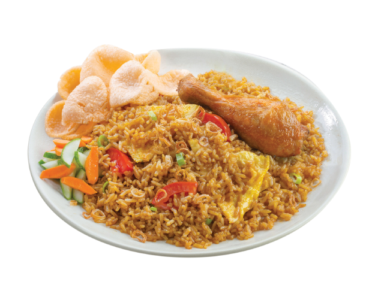

Nasi goreng adalah sebuah makanan berupa nasi yang digoreng dan diaduk dalam minyak goreng, margarin, atau mentega. Biasanya ditambah kecap manis, bawang merah, bawang putih, asam jawa, lada dan bumbu-bumbu lainnya seperti telur, ayam, dan kerupuk. Ada pula nasi goreng jenis lain yang dibuat bersama ikan asin yang juga populer di seluruh Indonesia.
